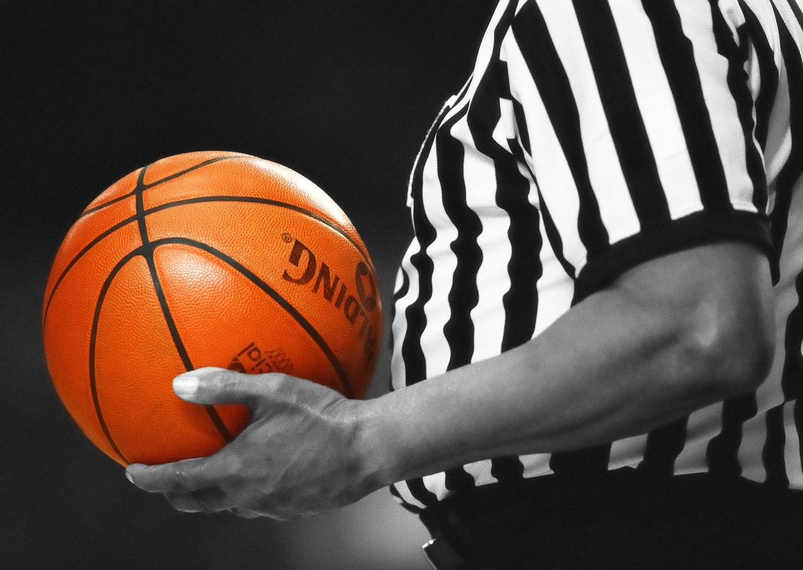
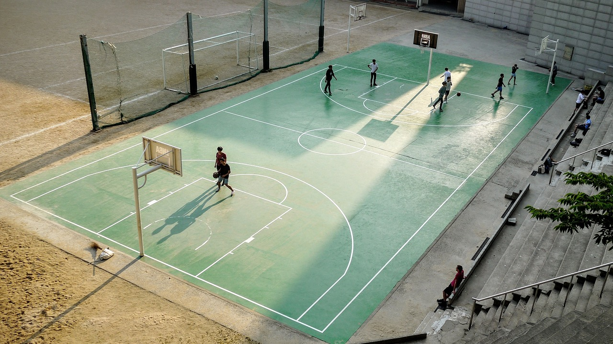
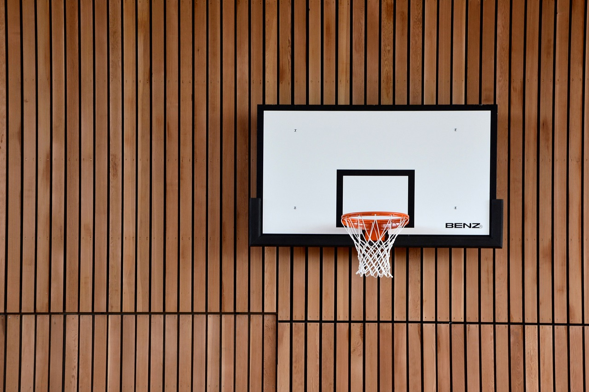
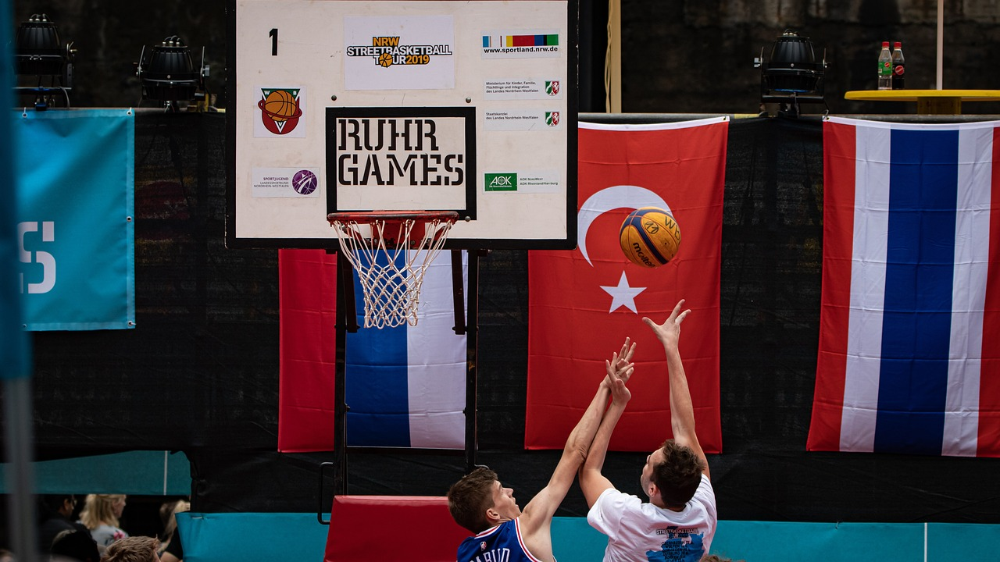

Temps de jeu, règles de temps,fautes : les règles du basketball en résumé

Vous venez tout juste de découvrir votre passion pour le basket ? Des termes commme « goaltending » (contre illégal), « retour en zone » ou encore « shot clock » (chronomètre des tirs) vous sont sûrement encore inconnus. Cela va changer et vous pourrez bientôt vous aussi mettre votre grain de sel dans les discussions devant votre télévision ou en salle : c'est parti pour une formation express aux règles du basket.
Les règles de base du basket : récapitulatif
Un terrain de jeu, deux équipes, deux paniers et un ballon - le match peut commencer. Découvrez ici plus de détails quant aux conditions indispensables pour un match de basket.
Joueurs
Au basket, ce sont dix joueurs qui occupent le terrain, donc cinq par équipe. Chaque équipe a le droit d'avoir jusqu'à sept remplaçants qui peuvent être envoyés sur le terrain autant de fois que nécessaire.
Pour le coup d'envoi, les cinq joueurs d'une équipe (appelés les "starting five" - cinq majeurs) prennent en général les positions suivantes : un pivot, deux meneurs et deux arrières mais d'autres constellations sont également possibles.
Les tirs
Le but du jeu est simple : lancer le ballon dans le panier de l'équipe adverse, panier placé à 3,05 m de haut au bord de la ligne la moins longue délimitant le terrain. Un lancer-franc rapporte un point, un tir normal deux points. Si joueur qui lance le ballon se situe derrière la ligne des trois points, le panier rapporte trois points. A la fin du temps de jeu règlementaire, l'équipe ayant marqué le plus de points remporte le match.

Temps de jeu
Un match de la FIBA se compose de quatre périodes : les quarts-temps. Chaque période dure 10 minutes, en NBA un quart-temps dure douze minutes. En cas d'égalité à l'issu du temps règlementaire, des prolongations de cinq minutes chacune sont jouées jusqu'à ce qu'une des deux équipes sorte vainqueur.
Les règles les plus importantes du basketball
Contre illégal, dribles, règle des 8 secondes - c'était quoi déjà ? Vous avez besoin de revoir les règles du basket ? Ne vous en faites pas, nous résumons ici les règles à connaître dans cette discipline sportive.
A propos : les règles au basket peuvent légèrement varier d'une ligue à l'autre comme dans la FIBA, la NBA ou la NCAA.

Fautes
Dans le domaine du basket on retient quatre sortes de fautes différentes :
• la faute personnelle : contact illégal avec un adversaire (faute défensive, faute offensive)
• la faute technique : non-respect de certaines règles et manque de discipline (par ex. non-respect d'une décision prise par un arbitre, provocation, un nombre trop élevé de joueurs sur le terrain)
• la faute flagrante ou anti-sportive : faute commise avec un engagement physique exagéré, intentionnelle et non-nécessaire
• la faute disqualifiante : faute anti-sportive extrème, entraînant l'exclusion du joueur (insultes, bagarre etc.)
Faute défensive
Un défenseur ne peut essayer de repousser un attaquant que dans une certaine mesure. Retenir, bloquer, pousser, charger, faire un croche-pied ou bien bloquer en tendant les bras, les coudes ou les jambes, tout cela est interdit.
Faute offensive
Un attaquant en possession du ballon commet une faute s'il rentre en contact avec un défenseur se trouvant dans une prosition de défense légale ou qui recule. Repousser le défenseur à l'aide des avant-bras ou un entrer en contact avec les coudes sont des fautes offensives typiques.
Pénalités
Suite à une faute disqualifiante ou deux fautes anti-sportives, le joueur est exclu du match et doit quitter la salle et attendre la fin du match dans les vestiaires.
Après cinq fautes personnelles ou techniques, le joueur est exclu du match en cours.
Les violations de temps
Le basketball est une discipline variée et se caractérise par son jeu rapide. Cela vient surtout du fait que des règles définissent le temps maximum que peut prendre une action.
La shot-clock : la règle des 24 secondes
Un chronomètre affiche le décompte des 24 secondes, temps maximal autorisé pour une action offensive. Le chronomètre est activé à chaque nouvelle possession de ballon par une équipe.
Si le ballon touche l'anneau du panier de l'équipe adverse, le chronomètre est redémarré.
La règle des 8 secondes
Une équipe en possession du ballon dispose de huit secondes pour faire sortir le ballon de sa moitié de terrain et le faire évoluer dans la moitié de l'équipe adverse.
La règle des 3 secondes
Lors d'une offensive les arrières ne peuvent rester que trois secondes au maximum dans la moitié de terrain adverse. Peu importe qu'ils soient en possession du ballon ou non.
Les arbitres sont cependant plutôt souples sur cette règle et ne pénalisent les violations que rarement, en particulier lors de matchs de haut niveau.
La règle des 5 secondes
Lors d'une remise en jeu, un joueur ne peut tenir le ballon que pendant cinq secondes au maximum.
Pendant le jeu, si un joueur est étroitement marqué, il doit dribbler, passer ou lancer un panier dans les cinq secondes.
En cas de violation de cette règle, l'équipe adverse obtient un lancer-franc.
Hors-jeu
Lorsque le ballon ou le joueur en possession du ballon touche le sol sur ou en dehors de la ligne de touche, l'arbitre siffle un hors-jeu.
Marcher
Après un dribble le joueur en possession du ballon n'est autorisé à avoir que deux appuis au sol. Après cela, il est obligé de passer ou tirer au panier. Il peut lever sa jambe d'appui pour le lancer mais n'a pas le droit de la reposer au sol.

Contact avec le pied
Tout contact du ballon avec le pied, le genou ou la jambe est considéré comme une faute. Les sanctions sont différentes si la faute est commise par un attaquant ou un défenseur :
• Si un défenseur touche le ballon du pied et plus de dix secondes se sont écoulées depuis le début de l'attaque, le chronomètre des tirs est remis à 14 secondes.
• Si un attaquant commet la faute, le ballon passe à l'équipe adverse qui bénéficie en plus des 24 secondes pour une nouvelle attaque.
Retour en zone
Lors d'une attaque, les joueurs de l'équipe en possession du ballon ne sont pas autorisés à renvoyer le ballon de la zone adverse - appelée la zone avant, dans leur propre moitié de terrain - appelée zone arrière.
Le double dribble
Si un attaquant reprend le ballon après un dribble, il ne peut pas recommencer à dribbler. Une reprise de dribble et une faute et l'équipe adverse reprend possession du ballon et une remise en jeu se fait sur la ligne de touche.
Le contre illégal
Un ballon lancé en direction du panier ne peut être contré que si il se trouve en phase ascendante. En revanche, si le ballon évolue en phase descendante (en direction du panier), il ne doit pas être contré et ne peut être touché qu'après être entré en contact avec le panier.
Pêt à marquer des paniers ?
Vous avez désormais acquis les connaissances de bases nécessaires et pouvez vous lancer - peu importe si vous dribblez sur le terrain ou préférez prendre place dans les tribunes.
Nous vous souhaitons de bons moments sur le terrain et dans les tribunes !